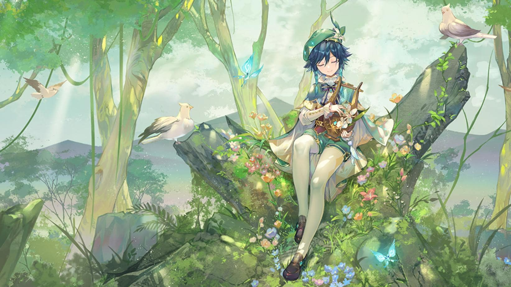
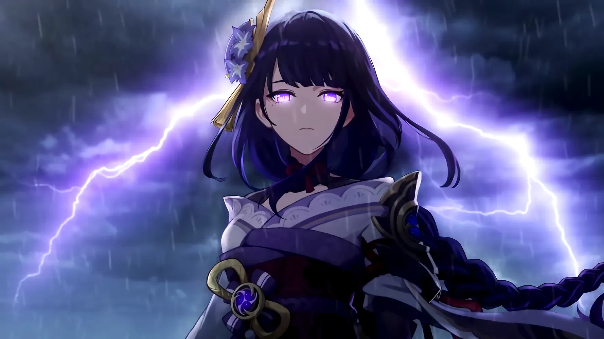

There are the list of character in my favorite game Genshin Impact.
Venti
Venti is a Anemo character, the Anemo Archon of Monstadt, represents freedom
- The bow user.
- Anemo element power.
- He love wine, wine, and wine.
Zhongli
Zhongli is a Geo character, the Geo Archon of Liyue, represents contract

- The polearm user.
- Geo element power.
- He is more than 6000 years old. And work with Hutao
Raiden Shogun
Raiden Shogun is a Electro character, the Electro Archon of Inazuma, represents eternity
- The polearm user.
- Electro element power.
- Raiden Shogun is her puppet, her name is Ei. She deeply in love with sweets
Nahida
Nahida is a Dendro character, the Dendro Archon of Sumeru, represents wisdom

- The catalist user.
- Dendro element power.
- She is cute and more wisdom than your imaginary.
Furina
Furina is a Hydro character, the Hydro Archon of Fontaine, represents justice

- The sword user.
- Hydro element power.
- She is the most famous actress of this nation.
Visit genshin.hoyoverse.com to download the game and enjoy